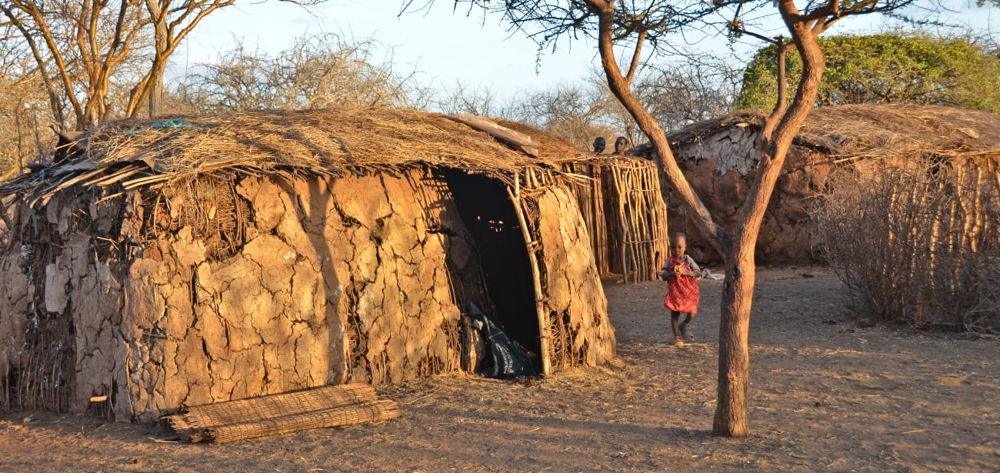
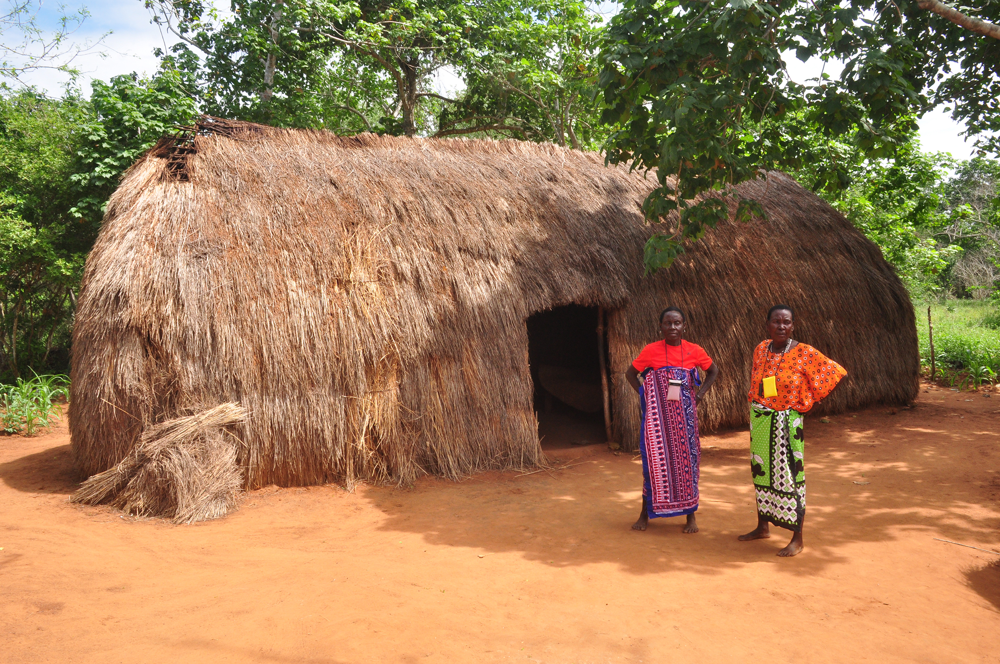
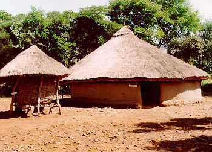

Harmony with the Land
Long before external influences arrived on the East African coast, diverse Kenyan communities developed highly sophisticated structural systems tailored perfectly to their environments.
Traditional architecture across Kenya was fundamentally organic. Rather than dominating the landscape, structures were designed to blend into it, utilizing materials harvested directly from the immediate surroundings such as thatched grass, structural timber poles, mud, and volcanic ash soil mixtures.
Key Design Philosophies:
- Thermal Comfort: Mud-walled structures with thick grass thatch roofing provided exceptional natural insulation, keeping interiors cool during the scorching day and trapping warmth during cold nights.
- Communal Layouts: Spatial design was rarely about individual buildings. Homesteads like the traditional Maasai Manyatta or Luo Dala were arranged in circular patterns to secure livestock and reinforce community safety and social hierarchies.
- Zero-Waste Lifecycles: Structures were highly sustainable. When a settlement moved or shifted, the organic materials naturally decomposed back into the earth without harming the local ecosystem.
"Space was defined by relationship, not just stone. The layout of the homestead reflected family structures and cosmic beliefs."
Regional Variations
The Maasai Manyatta
Rift Valley / Southern Kenya
Loaf-shaped structures built predominantly by women. A framework of interwoven wattle timber branches is plastered with a specialized mixture of mud, grass, and cattle dung. This cures into a durable, waterproof shell providing excellent thermal insulation.

Mijikenda Kaya Houses
Coastal Hinterlands
Often oblong structures entirely thatched from roof to ground level with palm fronds (makuti) or long grasses. These houses were hidden within sacred forested fortresses known as Kayas for protection and spiritual sanctuary.

The Luo Dala (Homestead)
Lake Victoria Basin / Western Kenya
A circular homestead arrangement designed around a central cattle enclosure (kul). The houses are built using mud-and-wattle walls with conical grass-thatched roofs, arranged in a strict spatial hierarchy reflecting marriage order and lineage seniority.

The Rendille Goba (Portable Dome)
Arid Northern Kenya
A highly sophisticated nomadic structure. Dome-shaped dwellings constructed from flexible curved branches lashed together with leather straps, covered in woven mats, wild sisal fiber, and animal skins. It can be dismantled in under an hour and packed onto camels.